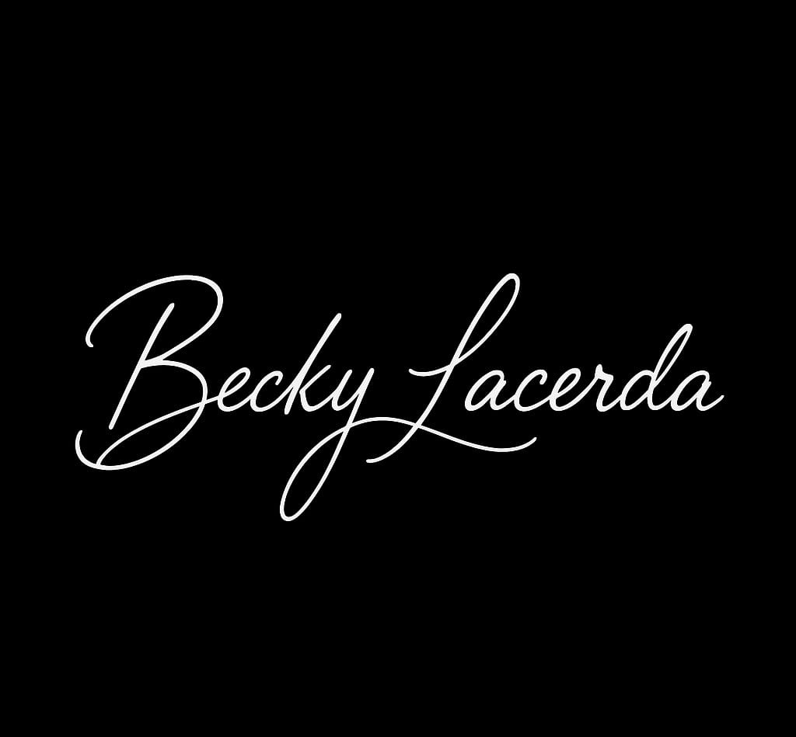
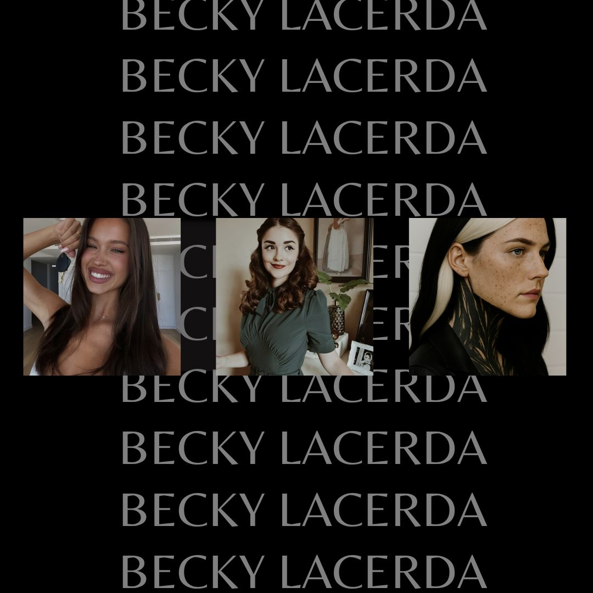
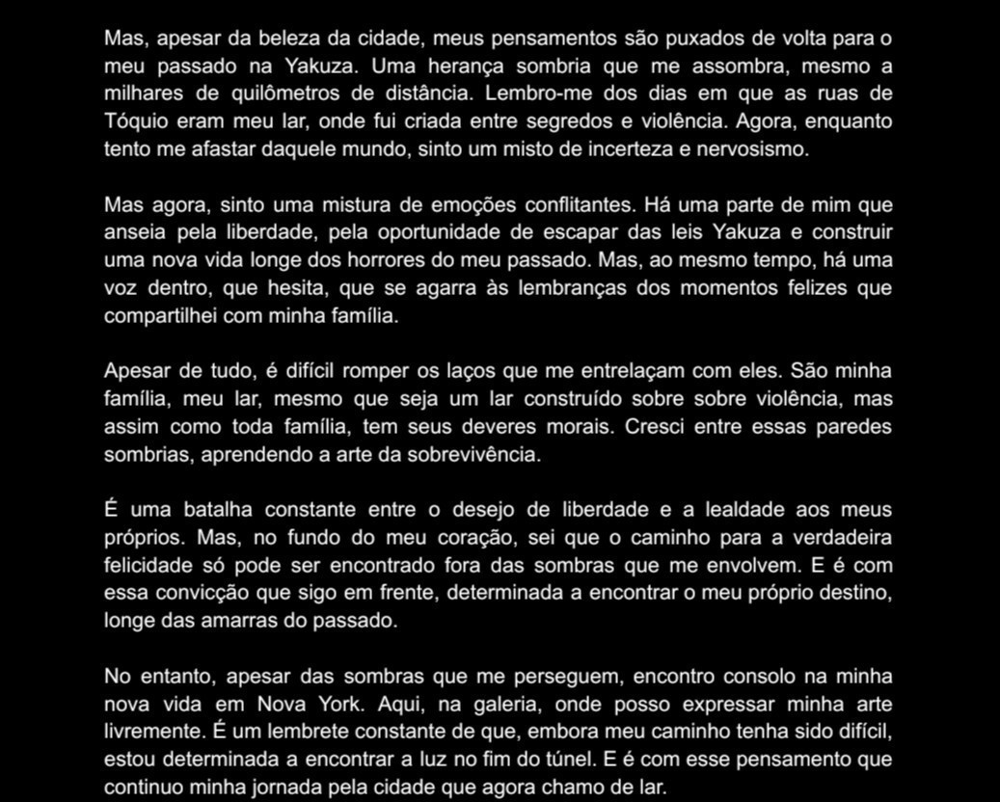
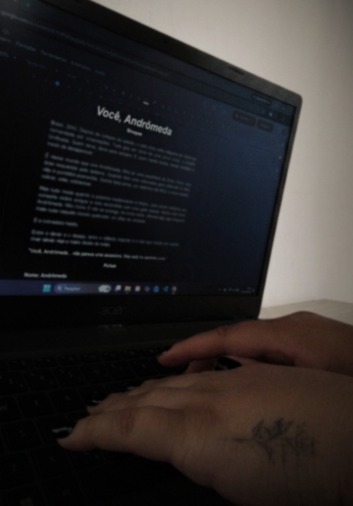

Descrição do projeto
Muitas histórias começam como sonhos, só precisam ser explorados.
A Becky Lacerda nasceu como uma identidade autoral dedicada à criação de histórias, personagens e universos literários. Um espaço onde ideias, sentimentos e imaginação ganham forma por meio da escrita e da construção narrativa.
Objetivo
Construir uma presença autoral que conecte leitores às histórias criadas, desenvolvendo uma identidade própria para a autora e fortalecendo a relação entre escrita, criatividade e comunidade.
Processo criativo
Briefing e definição de posicionamento, exploração de conceitos O processo começa a partir de ideias, sentimentos e referências que são transformados em conceitos narrativos. A partir disso, são desenvolvidos personagens, cenários, enredos e elementos visuais que ajudam a construir cada universo literário e sua comunicação.



Resultados
A construção da Becky Lacerda resultou em uma identidade autoral estruturada, reunindo escrita, criação de conteúdo e desenvolvimento visual para apresentar histórias e aproximar leitores do universo criado.